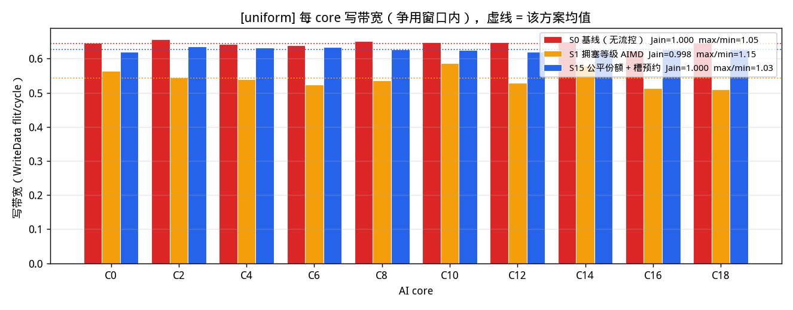
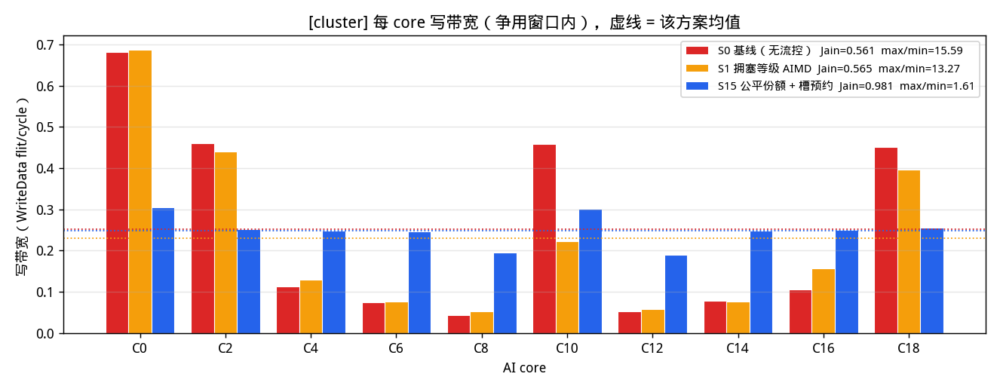
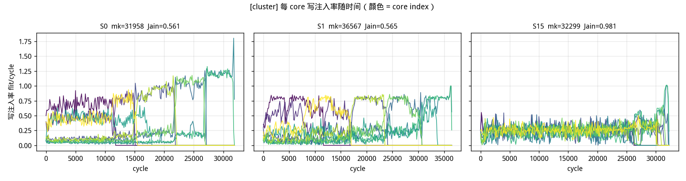
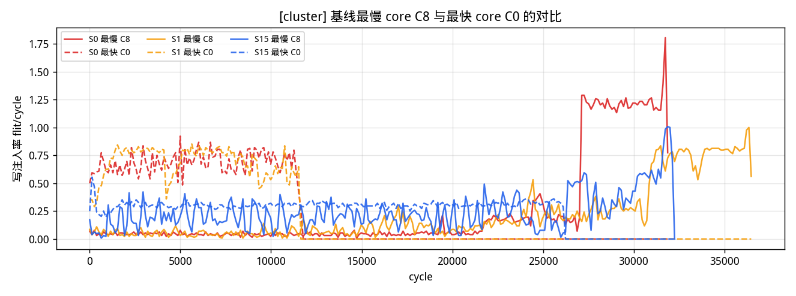
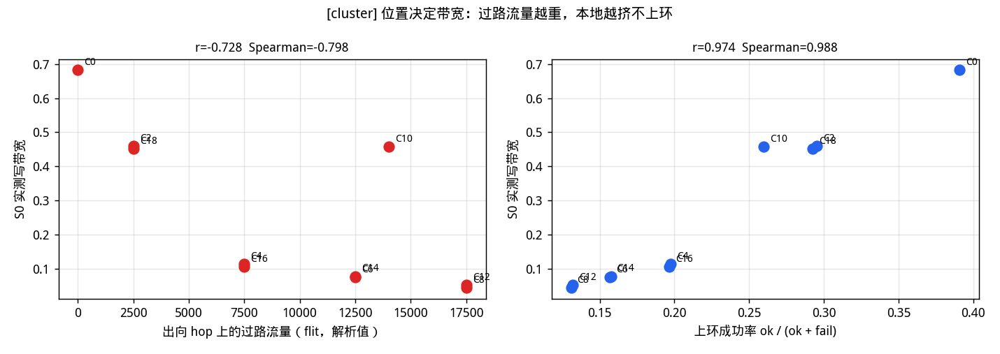
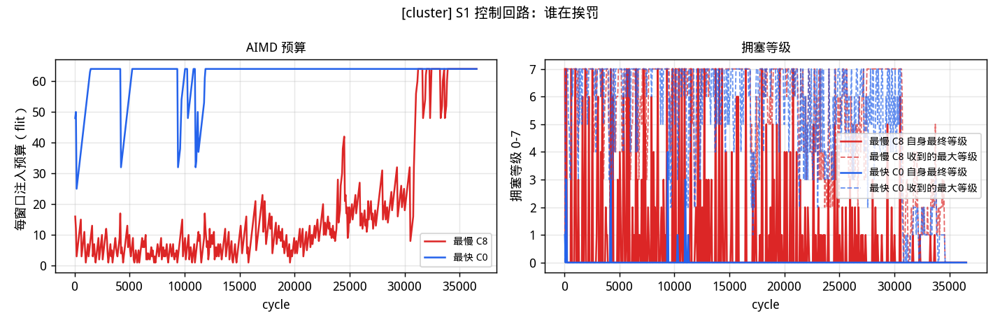
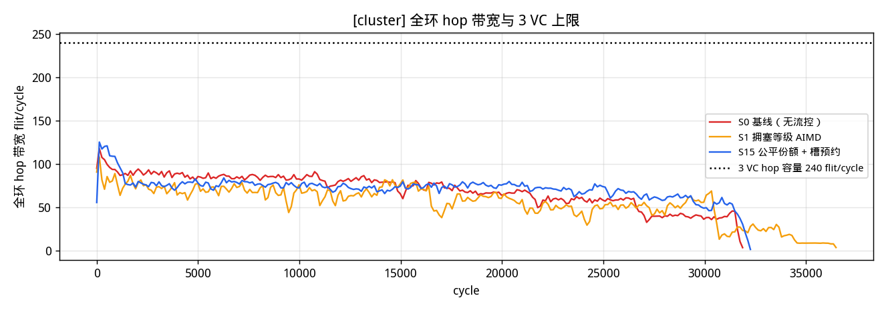

20 节点双 plane 双向环，偶数 index 是 AI core（CHI RN），奇数是
memory Home Agent。本报告只讨论写：完整的 WriteNoSnp 四拍握手
REQ → DBIDResp → WriteData×4 → Comp，因此实例化
REQ / RSP / DAT 三条 CHI VC，每条有向 hop 容量
240 flit/cycle。每 core 发 2000 笔写、
8000 个 WriteData flit。
per-core 写带宽 = 该 core 在争用窗口内成功上环的 WriteData flit / cycle。
既有的读研究与 report_ring2_20node.html 未被改动。
_launch 从不阻塞已在环上的 flit，只占用槽位；本地注入由
_can_board 拒绝——要么该有向 hop 的这条 VC 被占，要么
arr_set 显示 σ 拍内有在环 flit 即将到达。
n_inring_blocked = 0，无缓存语义自始至终成立。关键推论：源端限速无法凭空造出槽位。让上游少发，让出来的空拍会被下一个 过路 flit 顺手拿走，而不是留给被饿死的节点。这一点决定了后面 S1 为什么会失败。
| 下界 | cycle | 含义 |
|---|---|---|
| LB_link 每 VC 独立链路 | 6264 | REQ/RSP/DAT 各自占一条 VC，取三者最大 |
| LB_port 端口合并 | 5133 | inject / leave 每 (node, plane) 仍只有一个端口，三 VC 共享 |
| LB_cut 割集 | 4986 | 跨割面的流量除以割面上的有向链路数 |
| LB_txn 事务串行链 | 91 | REQ→DBIDResp→WriteData→Comp 两个来回 |
| bound | 6264 | 以上取最大 |
| 下界 | cycle | 含义 |
|---|---|---|
| LB_link 每 VC 独立链路 | 18000 | REQ/RSP/DAT 各自占一条 VC，取三者最大 |
| LB_port 端口合并 | 25000 | inject / leave 每 (node, plane) 仍只有一个端口，三 VC 共享 |
| LB_cut 割集 | 5000 | 跨割面的流量除以割面上的有向链路数 |
| LB_txn 事务串行链 | 87 | REQ→DBIDResp→WriteData→Comp 两个来回 |
| bound | 25000 | 以上取最大 |
cluster 的瓶颈从链路移到了端口： LB_port=25000 远大于 LB_link=18000， 因为两个热点 HA 的 leave 端口要吞下全环的写数据。
先说一个和预期相反、但数据很明确的结果。
| 方案 | makespan | Jain | max/min | CoV | 最低 BW | 最高 BW | 吞吐 flit/cycle | 吞吐差 | 偏转 | 上环失败 |
|---|---|---|---|---|---|---|---|---|---|---|
| S0 基线（无流控） | 12617 | 0.99983 | 1.0524 | 0.01309 | 0.62404 | 0.65671 | 6.3407 | +0.0% | 19748 | 153691 |
| S1 拥塞等级 AIMD | 15277 | 0.99789 | 1.1504 | 0.046 | 0.51031 | 0.58707 | 5.2366 | -17.4% | 15445 | 91696 |
| S15 公平份额 + 槽预约 | 12975 | 0.99992 | 1.0263 | 0.00874 | 0.61998 | 0.63628 | 6.1657 | -2.8% | 18782 | 138399 |

| 方案 | makespan | Jain | max/min | CoV | 最低 BW | 最高 BW | 吞吐 flit/cycle | 吞吐差 | 偏转 | 上环失败 |
|---|---|---|---|---|---|---|---|---|---|---|
| S0 基线（无流控） | 31958 | 0.56117 | 15.5945 | 0.88431 | 0.04377 | 0.68259 | 2.5033 | +0.0% | 76938 | 342228 |
| S1 拥塞等级 AIMD | 36567 | 0.5647 | 13.267 | 0.87798 | 0.05181 | 0.6874 | 2.1878 | -12.6% | 65231 | 140892 |
| S15 公平份额 + 槽预约 | 32299 | 0.98065 | 1.6093 | 0.14047 | 0.18947 | 0.30491 | 2.4769 | -1.1% | 80863 | 284086 |


时间轴上看得更清楚：基线里少数几个 core 一开始就抢到高注入率并 一直保持，被压住的 core 全程贴着地板走。

| core | S0 写带宽 | 出向过路流量 | 出向平均 λ | 上环成功率 | hop_busy 失败 | I-tag 失败 | outstanding 失败 |
|---|---|---|---|---|---|---|---|
| C0 | 0.68259 | 0.0 | 2.5 | 0.3906 | 6923 | 5559 | 0 |
| C2 | 0.4599 | 2500.0 | 2.0 | 0.2954 | 13697 | 5387 | 0 |
| C4 | 0.11357 | 7500.0 | 2.0 | 0.1974 | 26258 | 6267 | 0 |
| C6 | 0.07491 | 12500.0 | 2.0 | 0.1566 | 39148 | 3947 | 0 |
| C8 | 0.04377 | 17500.0 | 1.5 | 0.1308 | 52572 | 584 | 0 |
| C10 | 0.45811 | 14000.0 | 2.5 | 0.2597 | 16364 | 6437 | 0 |
| C12 | 0.05205 | 17500.0 | 2.0 | 0.132 | 51966 | 632 | 0 |
| C14 | 0.07782 | 12500.0 | 2.0 | 0.1575 | 38455 | 4336 | 0 |
| C16 | 0.10563 | 7500.0 | 2.0 | 0.1964 | 25902 | 6826 | 0 |
| C18 | 0.45205 | 2500.0 | 2.5 | 0.2925 | 13484 | 5868 | 0 |
把每个 core 的实测带宽和它出向 hop 上的过路流量（别处上环、从这里路过的 flit，按最短路解析算出）放在一起，相关系数 r = -0.728，Spearman 秩相关 -0.7976；和上环成功率的相关是 r = 0.9735。

_itag_blocks 只压制与它竞争的其他注入者，对在环 flit 无效。
表中被饿死的 core，失败原因绝大多数是 hop_busy（在环占用），
I-tag 类失败占比很小——I-tag 把等待时间限住了，却无法把带宽拉平。
热点 HA 的 leave 端口一拍只能吞一个 flit；同拍到达的其它 flit 被偏转， 再绕一整圈回来。基线 cluster 下偏转 76938 次， 这些流量重新占用热点前最后一跳，进一步压死本来就挤不上去的邻居 core。
四段可独立消融，全部按规格实现在 utils/rg_ring2_fc.py：
total_fail 与 net_fail（只计纯粹由在环占用造成的失败），
等级 = min(7, count // 8)。CongestionBus 专用广播总线，不占环上 hop，
延迟 1 拍。= level_of(own_total_fail −
max_received_net_fail)；罚则 budget ← max(min, ⌊budget·α⌋)，
α = 0.75 / 0.5 / 0.25；奖励 budget ← min(window, budget + β)，
β = 16 / 8 / 2。| window | α/β 档位 | makespan | Jain | max/min | CoV | 吞吐 |
|---|---|---|---|---|---|---|
| 64 | spec | 36567 | 0.5647 | 13.267 | 0.87798 | 2.1878 |
| 64 | harsh | 40376 | 0.55967 | 11.5274 | 0.88699 | 1.9814 |
| 64 | gentle | 35657 | 0.54648 | 19.0024 | 0.91099 | 2.2436 |
| 128 | spec | 40836 | 0.63565 | 8.8692 | 0.7571 | 1.9591 |
| 128 | harsh | 48108 | 0.74516 | 5.4533 | 0.58481 | 1.6629 |
| 128 | gentle | 37671 | 0.63006 | 9.3677 | 0.76626 | 2.1236 |
cluster 上的 window × α/β 档位扫描。

共享同一条通路的 core 收到同一个等级，于是乘以同一个 α。等比缩小不改变 贫富比值：预算曲线整体下移，Jain 几乎不动。
被饿死的 core own_total_fail 很高；而上游的赢家正在赢，
它的 net_fail 很低，所以受害者收到的
max_received_net_fail 很小、差值很大 →
受害者惩罚自己；赢家差值 ≈ 0，继续 +β。
这是一个放大不公平的正反馈，图中最慢 core 的最终等级持续高于最快 core。
这是最根本的一条。在环优先是绝对的，被限速的 core 让出的空拍立刻被过路 flit 吃掉，被饿死的 core 一无所获。所以 S1 只是把总量压下去：吞吐 -12.6%，而最慢 core 的带宽几乎不动。
保留专用总线和窗口结构，换掉聚合什么，并加一个仲裁钩子。
(等级, 本窗口成功数, 累计成功数,
active, 各出向公平份额)。reserve_gap 的节点，通过总线预约未来若干拍的
(plane, dir, VC) 槽；上游节点不得注入会在预约窗口内到达该槽的
flit。资格用全环累计量判定而不是各自的本地目标——按本地判定时几乎每个节点都
认为自己落后，预约互相抵消，全环白白付出上万次让路。n_inring_blocked 与
max_inring_hold 全程为 0，无缓存前提没有被偷偷放弃。| 方案 | makespan | Jain | max/min | CoV | 最低 BW | 最高 BW | 吞吐 flit/cycle | 吞吐差 | 偏转 | 上环失败 |
|---|---|---|---|---|---|---|---|---|---|---|
| S0 基线（无流控） | 31958 | 0.56117 | 15.5945 | 0.88431 | 0.04377 | 0.68259 | 2.5033 | +0.0% | 76938 | 342228 |
| S1 拥塞等级 AIMD | 36567 | 0.5647 | 13.267 | 0.87798 | 0.05181 | 0.6874 | 2.1878 | -12.6% | 65231 | 140892 |
| S15 公平份额 + 槽预约 | 32299 | 0.98065 | 1.6093 | 0.14047 | 0.18947 | 0.30491 | 2.4769 | -1.1% | 80863 | 284086 |
诚实地说明没有完全达标的部分与原因：max/min 仍是 1.6093×。剩下的差距来自热点相邻 core 的瞬时仲裁劣势。 把它的平均速率配到公平份额还不够——它只能在“恰好没有过路 flit”的那些拍上环， 而这样的空拍本身就稀缺。实测中该 core 全程只有约 12% 的 (拍, plane) 机会是可上环的，且它已经用掉了其中的绝大多数。
hold_depth = 0 的严格无缓存语义。
这是本研究给出的真实结论：在严格无缓存、在环绝对优先的前提下，
完全的 per-core 写带宽均等无法在不引入环上缓冲的情况下达成。
| 方案 | window | 广播次数 | 广播总 bit | 预算拒绝 | AIMD 降 | AIMD 升 | 预约槽 | 预约命中 | 上游让路 |
|---|---|---|---|---|---|---|---|---|---|
| S1 拥塞等级 AIMD | 64 | 11420 | 68520 | 377006 | 896 | 4814 | 0 | 0 | 0 |
| S15 公平份额 + 槽预约 | 64 | 10080 | 796320 | 53949 | 907 | 1084 | 193648 | 41715 | 192787 |
专用广播总线不占用任何环上 hop，按窗口边界发一次。S1 每次
6 bit（两个 3 bit 等级）；S15 增加 8 bit 本窗口成功数、16 bit 累计数、
1 bit active，以及 6 个 8 bit 出向公平份额，共
79
bit/次。窗口 64 拍发一次，
折算到每拍的线上开销可以忽略；面积在 rg_sched_cost.py 中单列。